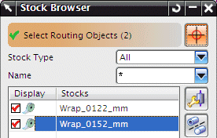
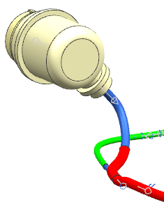

In the Piece Length box, type 400 and 回车。
The marker moves back a little from the end of the path.
Click the middle mouse button.
The Stock Browser dialog box lists the updated stock.

From the Stock list, right-click Wrap_0152_mm and choose Info.
Scroll a little ways down the Information window to see the stock’s characteristics:
===============================
Routing Characteristics
THICKNESS 0.355600
WIDTH 38.00000
COLOR Red
MATERIAL Vinyl
OVERSTOCK TYPE Wrapped
PART_NUMBER Wrap_0152_mm
===============================
Object Characteristics
LENGTH 400.00000
Close the Information window.
Click Close.

Close all parts without saving.